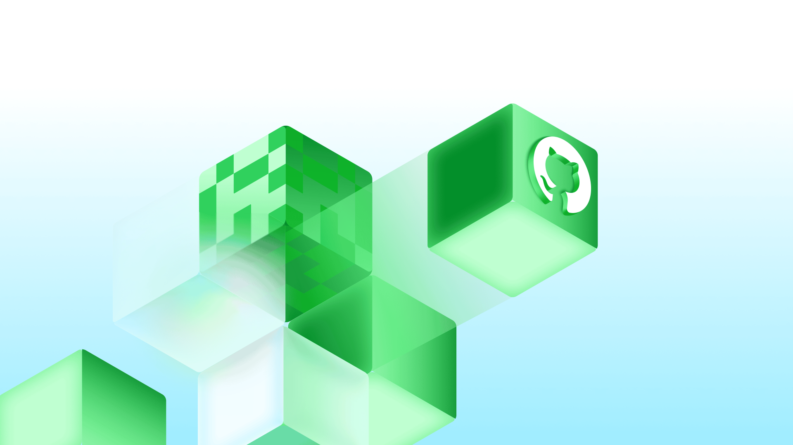
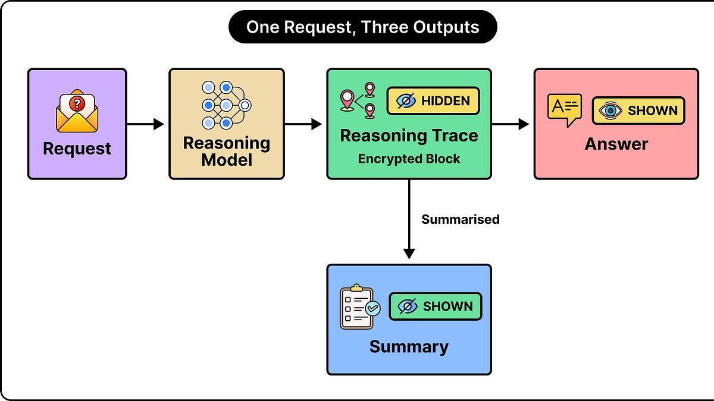
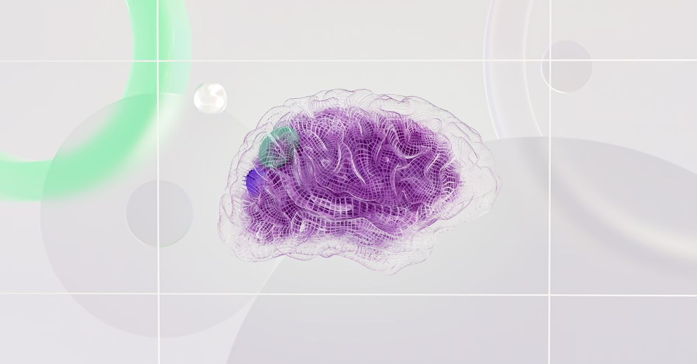
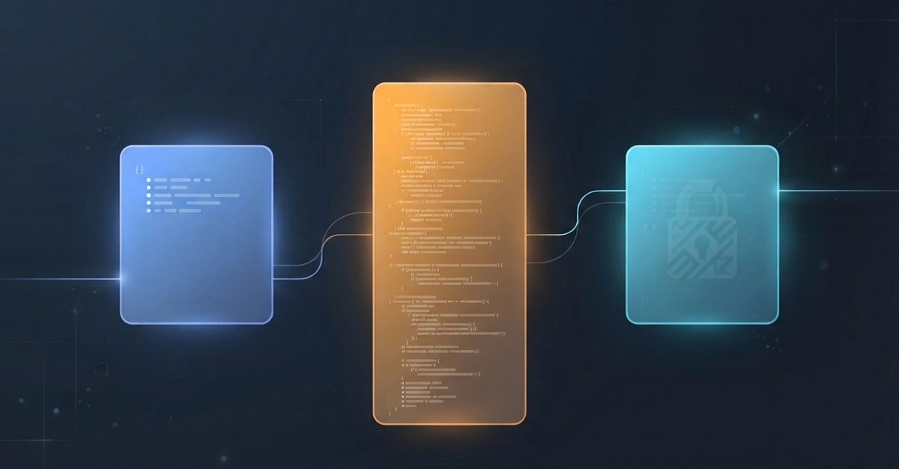
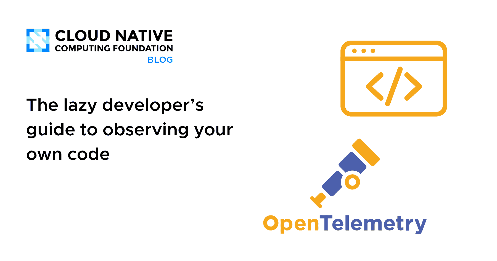
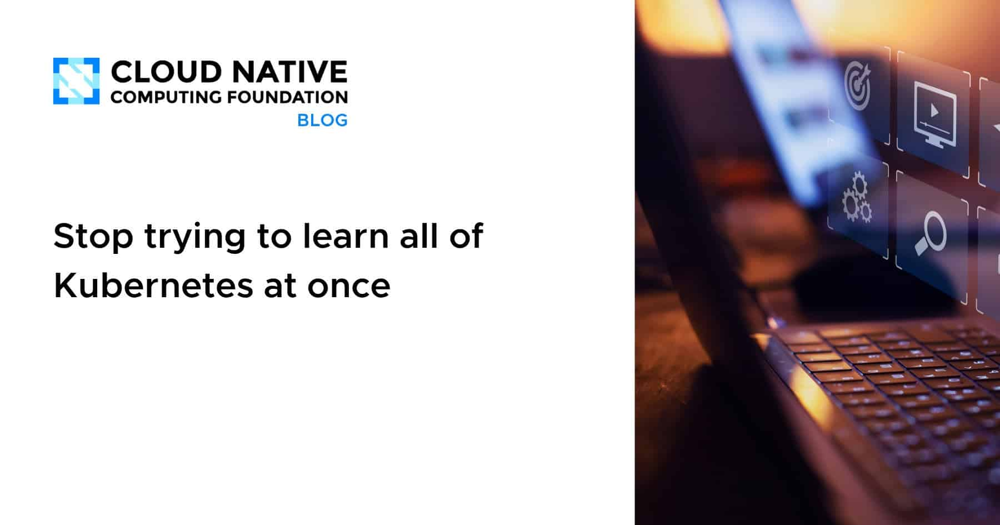
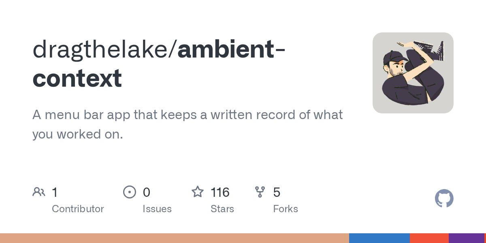
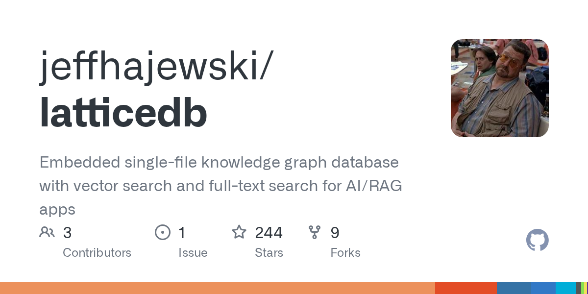

🔥 Top 3 (must read)
How to evaluate LLMs before production
GitHub shares the lessons they learned while evaluating LLMs for real-world secret scanning, before shipping anything to users. It is a practical look at building an eval process instead of trusting vibes. Why it matters: as an EM whose teams adopt AI, this is a ready template for how to test AI features before they reach production.

EVE Online: The Move to Python 3 Begins!
EVE Online has run on Stackless Python since 2003, with its last major upgrade 16 years ago, and is now starting the move to Python 3. It is one of the best long-running case studies of a huge legacy migration at scale. Why it matters: a concrete story about paying down 20 years of tech debt in a live system — useful thinking material for any delivery and migration planning you do.
S
How to Steal an AI Model's Private Thoughts
Researchers tested whether the encrypted reasoning blocks that Anthropic, OpenAI, and Google return to API clients actually keep that reasoning private. The answer has direct security implications for apps built on these APIs. Why it matters: if your teams build on LLM APIs, this changes what you should assume about what data those responses can leak.

🤖 AI for developers
Vector Database vs Knowledge Graph: Choosing Your LLM Store
a field guide comparing the two storage options behind LLM apps, scored on retrieval, reasoning, and cost, with a real client example of "almost right" answers from vector search alone.

What Bedrock AgentCore Actually Puts on Your A2A Agent Card
field-by-field comparison of the A2A agent card the same agent publishes on AWS Bedrock AgentCore, Google Cloud Run, and Azure Container Apps. Useful if you follow the agent-to-agent protocol space.

👔 Engineering & teams
The lazy developer's guide to observing your own code
CNCF on "shift left" for observability: how developers can instrument their own code with low effort instead of leaving it to ops.

Stop trying to learn all of Kubernetes at once
a former VMware architect's advice on learning Kubernetes in stages. Good link to hand to team members who are new to K8s.

🎯 For me
Thin day for your core stack — no Node.js, React, Flutter, or testing-tool news made the cut. The closest fits are the GitHub LLM-eval post (a process your teams can copy when adding AI features) and the CNCF observability piece (a low-friction practice to push in code review).
💡 App ideas & indie builds
Pit Stop — road-trip games at every US interstate exit
a $1.99 app that maps every business at all 19,675 US interstate exits and runs Jackbox-style multiplayer car games with CarPlay as the scoreboard. The builder asked r/daddit for game ideas Monday, shipped them Monday night, and hit #6 in paid Travel Tuesday. Great example of using a community as a live product-design loop.
R
Ovid — a bilingual reader with a 3D bookshelf
side-by-side reading in two languages, wrapped in a playful 3D shelf UI. Language learning through reading is close to your day job at ELSA; worth a look at how an indie approaches it.
R
Ambient-context — screen memory without screenshots
records what you saw on screen as plain text/Markdown instead of images. Solves the "what was that thing I read earlier?" problem without the privacy and storage cost of screenshot-based recall tools.

LatticeDB — like SQLite but for graph databases
an embedded, zero-server graph database. The user problem: graph queries today usually require running a heavy database server; this makes them a local file, like SQLite did for SQL.

MentionGPT — first paying customer at $16
finds Reddit/X threads where people ask for recommendations so you can promote your product there. Simple problem, fast path to first revenue — a nice reminder that distribution tools sell.
R
🎓 Try this
Spin up vpsmon, a lightweight Go system monitor for Linux VPS boxes — a five-minute install if you have any small servers or side-project hosts you currently check by SSH-ing in and running
top.